Building a Scenario Editor for Simulation
3-year journey from prototype to production | Product Design & Strategy
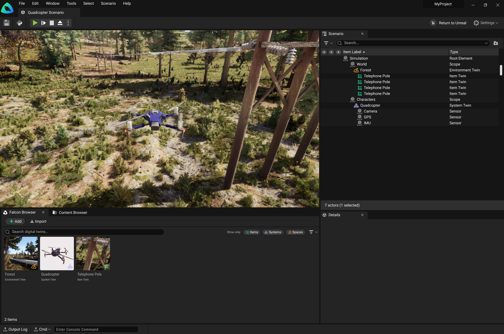
The Challenge
Transformed a code-centric workflow into a guided self-service product experience, user feedback evolved from bug reports to feature requests, and reduced support dependency for lower-tier users.
My Role
Evolved from UX Designer to Sole Product Designer to Co-Product Ownership, working directly with CPO, PM, and Director of Engineering to shape product strategy.
The Impact
User feedback transformed from bug reports to feature suggestions, signaling a fundamental shift in product maturity and usability.
The Starting Point: Version 1
Training computer vision models traditionally requires sending teams to real-world locations to capture thousands of images. It is an expensive and time-consuming process. This tool enables robotics engineers to generate photorealistic synthetic data instead, dramatically reducing costs while maintaining training quality.
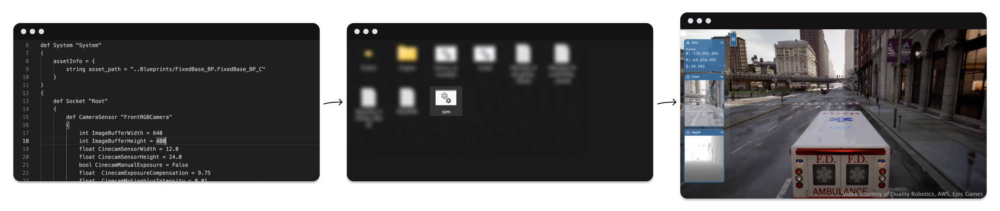
Hand-Coding Python
Every scenario change required writing pure Python code. Impossible to visualize changes without launching the full 3D application.
Batch File Launches
No friendly interface to launch the simulator. Users had to run a .bat extension file with no intuitive entry point.
Specialized Artists Required
All digital twins required Unreal Engine expertise to create or adapt existing assets. No self-service option for users who wanted to integrate new assets.
No Organization System
Digital twins were stored in large Unreal Engine files with no metadata or organizational system beyond filenames and dates.
The Web Platform Experiment
2021 - The First Pivot
The Lesson: Don't rebuild what exists at scale
We tested whether a 2D web interface could simplify 3D scenario editing. The answer was no on two fronts: technically, WebGL and pixel streaming couldn't handle our fidelity and performance requirements, and conceptually, abstracting 3D interactions into 2D confused users more than it helped them. These findings led us to partner with Unreal Engine and embrace the inherent complexity of 3D editing.
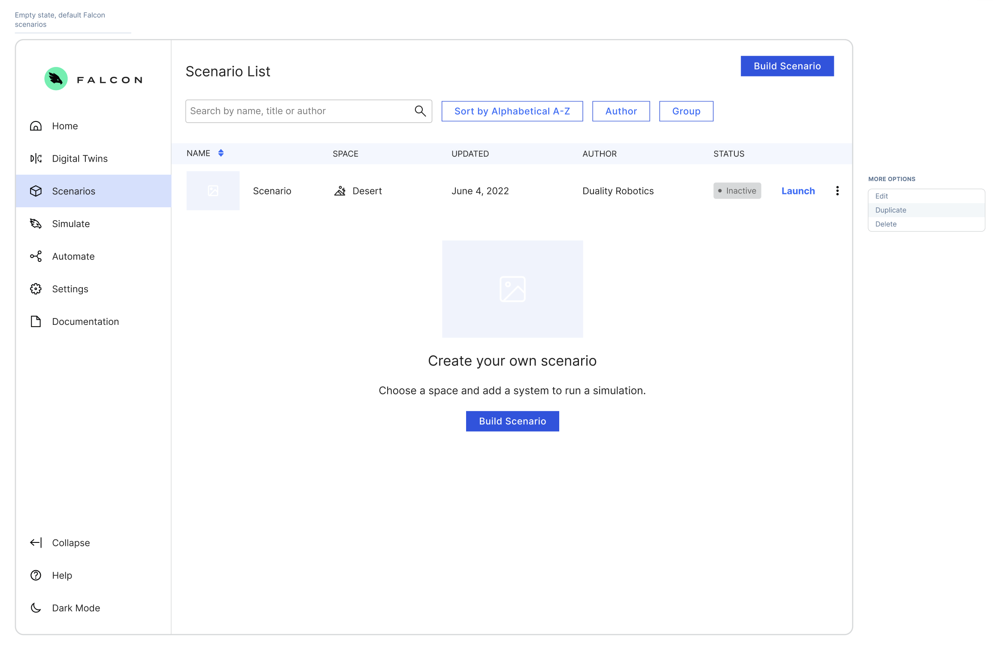
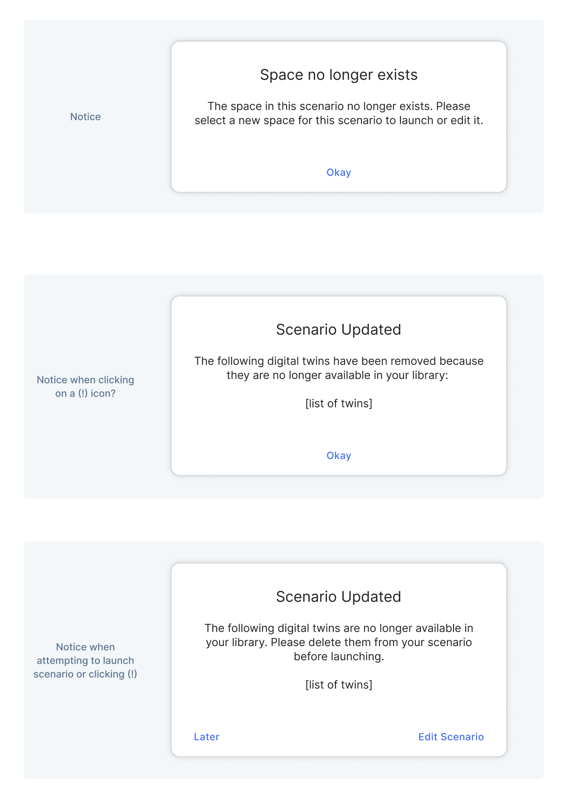
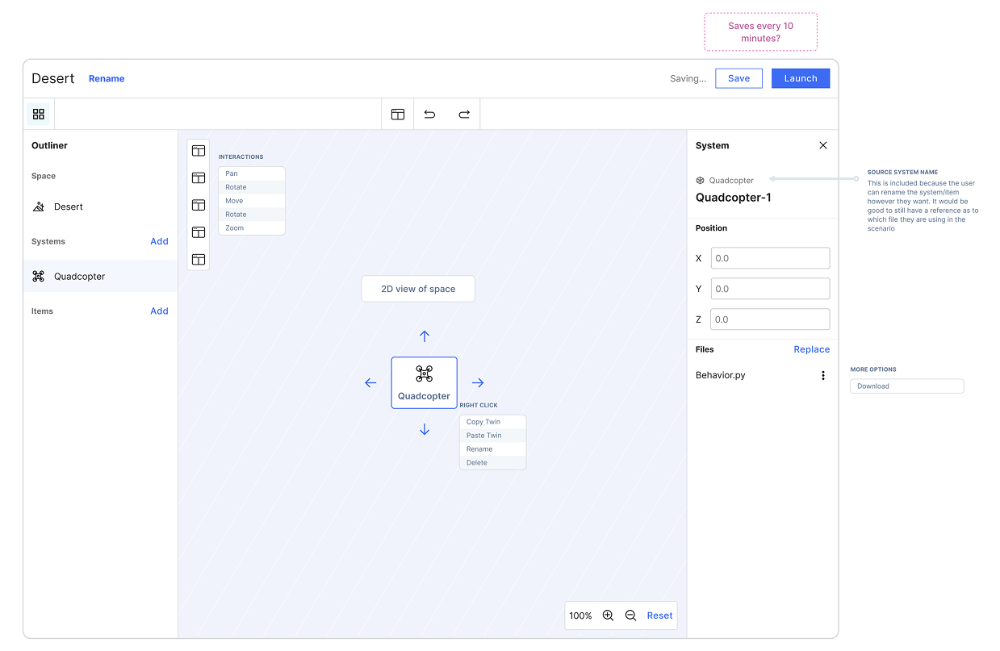
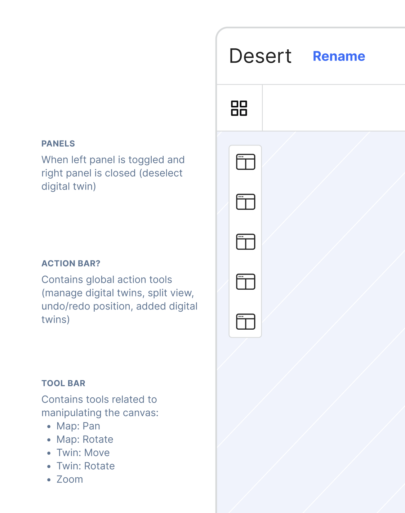
Partnering with Unreal Engine
2022 - The Strategic Shift
The Decision
Instead of competing with existing 3d software, embrace it. Partner with Epic to create a custom scenario editor built on their foundation.
The Approach
Digital Twin Terminology
Redesigned UI language to use "digital twin" terminology familiar to our users instead of Unreal Engine jargon
File System Mapping
Mapped our file system directly to the interface, making the technical architecture visible and understandable
Visual Python Generation
Created input systems that generated Python scripts behind the scenes - users configure visually and the code writes itself
Simplifying the Outliner Structure
Unreal Engine
Complex structure used for game development
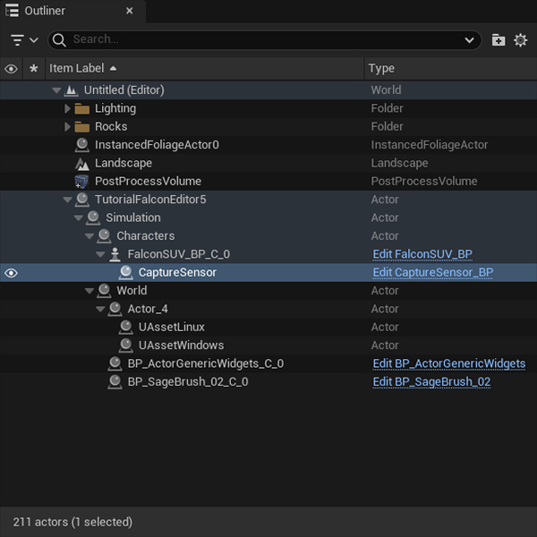
Scenario Builder
Simplified structure based on digital twin simulation terminology
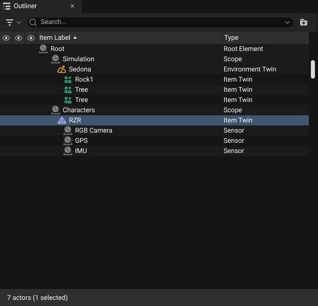
Creating a Focused Asset Browser
Unreal Engine
Content browser shows all project files, making it difficult to find simulation-specific assets
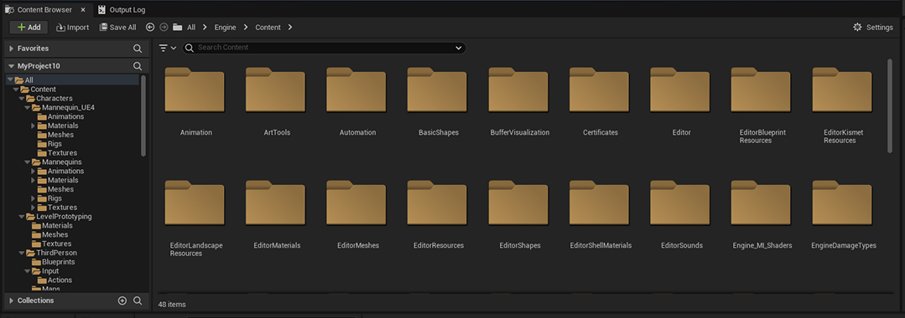
Scenario Builder
Falcon Browser only contains digital twins, making scenario building more straightforward and focused on simulation

Fast Mockups
Recreating the UE interface in Figma allowed for rapid prototyping, iteration, and quicker specification development
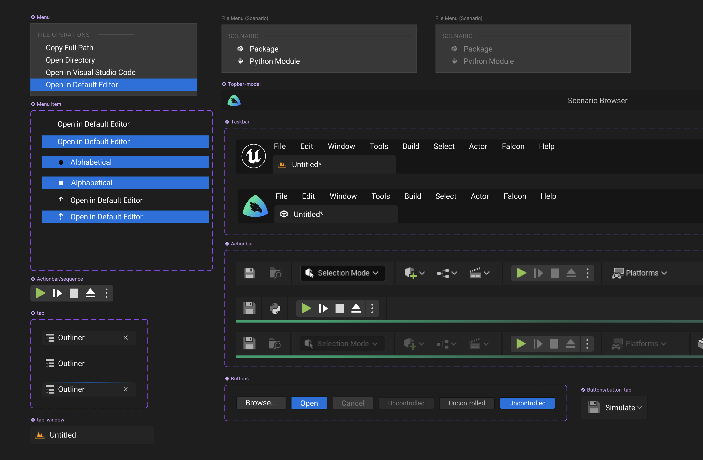
Hybrid Platform Strategy
2023 - The Layered Approach
The Realization
Unreal Engine has a steep learning curve. Our platform is inherently complex. We needed layered support to serve different user needs.
The Solution
Stop fighting the complexity - embrace it with complementary platforms.
Web App (Supporting)
- • Documentation where it's easy to update
- • Onboarding flows for new users
- • Lightweight access for stakeholder demos

Native App (Power)
- • Full scenario editing capabilities
- • High-fidelity simulation rendering
- • Offline capability for secure projects
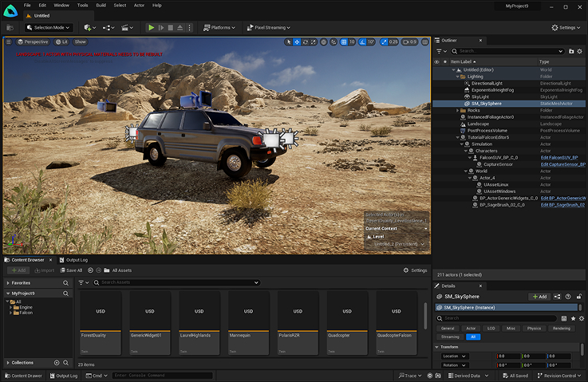
The Offline Reality
2024 - Serving All Users
The Challenge
Many clients operate in air-gapped, internet-free environments. We
couldn't depend solely on the web platform.
How do you serve vastly different user needs in one interface without
bloat?
The Solution: A Launcher for Two Worlds
Our custom launcher addressed a critical drop-off point: users were confused by Unreal Engine's native launcher and many abandoned the tool before creating their first scenario. By making scenario creation the primary action, we removed this friction while preserving full UE functionality for advanced users who need it.
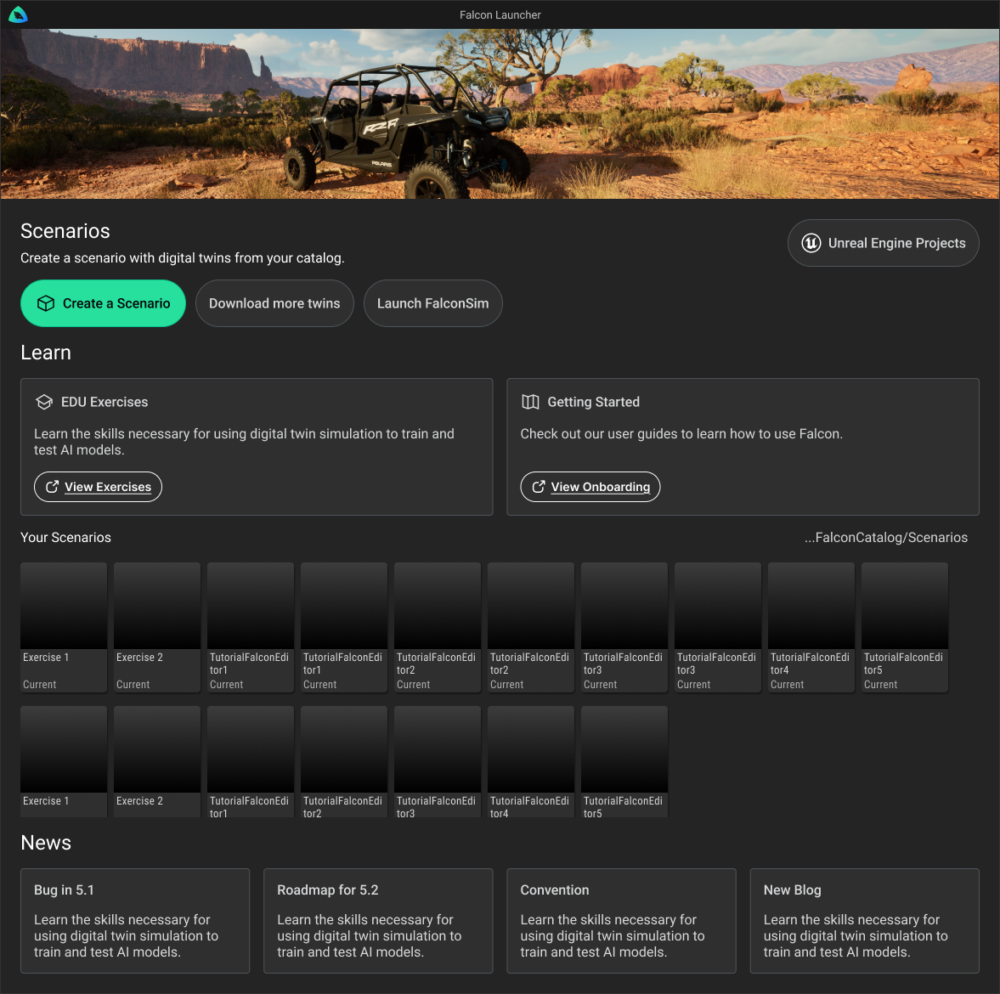
Concept Mock
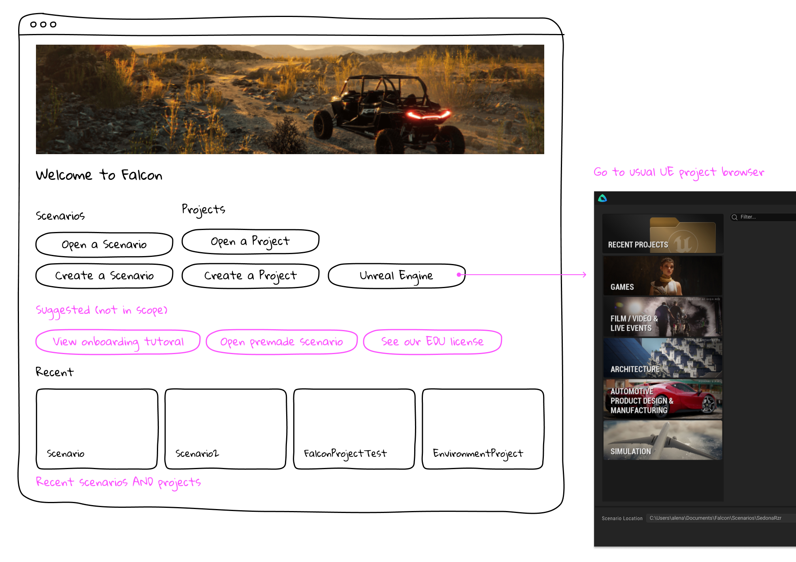
What I Learned
1. Self-Service is Strategic, Not Cosmetic
Reducing service dependency fundamentally changes the business model. We couldn't eliminate high-touch clients (our highest revenue), but we also couldn't neglect lower-tier users.
The decision: Prioritize self-service documentation and onboarding for lower-tier users (via the web platform) while maintaining white-glove support for enterprise. This freed engineering time while protecting revenue from high-touch clients.
2. Mental Models Scale Culture
As the product matured, inconsistent terminology and system understanding across the team created friction.
The solution: I created a design system and terminology guide that aligned product, engineering, and design teams. This ensured consistent communication and understanding across the organization.
3. Complexity Can't Be Wished Away
Inherently complex workflows resist over-simplification. "Make it one button" often creates abstraction that leads to confusion.
The insight: The real design challenge is deciding what to simplify and what to expose. Every compromise has tradeoffs.
Outcomes & Impact
User feedback transformed from bug reports to feature suggestions
This shift indicates users moved from "can't use it" to "want more from
it"
A fundamental product maturity milestone
Before
Prior to scenario editor
"It doesn't feel like a complete product"
"Hacky, not out-of-the-box"
"Some things just didn't work and I don't know why"
"Things I learned didn't matter after the next release"
"None of what I had to learn felt transferable"
After
First scenario editor release
"Seems strictly better in most cases to use the UI over editing USDA (a text file)"
"I feel fairly confident in my ability to move an asset to twin and utilize that asset"
Maturity
Users now asking for more
"Where can I read about how to get the most out of your API?"
"Can I use my own file versioning system?"
"Can you add IR sensors?"
Self-Service Enabled
Users can create scenarios more independently
Support Dependency Reduced
Lower-tier users no longer require constant engineering help
Multi-Platform Ecosystem
Seamless experience across web, native, and offline environments
Other Work
Designing a Scenario and Digital Twin Management Webapp
Managed product development and designed a complete web-based experience from scratch. A Vue.js web application.
Learn More